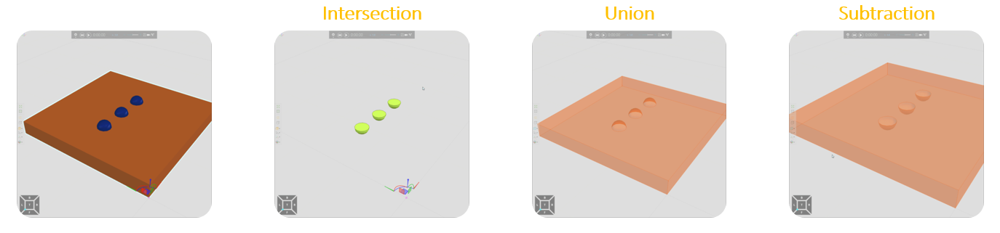

The boolean feature is used for intersect/unite/subtract geometry operations based on the 2 child features assigned to it.
Each geometry set of the first child feature is traversed and applied to the boolean operation while traversing each set on the second feature. Result is stored on the sets of the first feature. This should be taken into account to understand the end result, specially when we work with Intersection or Subtraction.

| Name | Description |
| Name | Defines the name of the feature. |
| Visible | Turns on/off the visibility of the geometry. |
| Operation | Intersection
The overlapping geometry is kept Union The overlapping geometry is removed Subtraction The second geometry is removed including the overlapping geometry with the first geometry |
| Material | Defines the material of the geometry. |